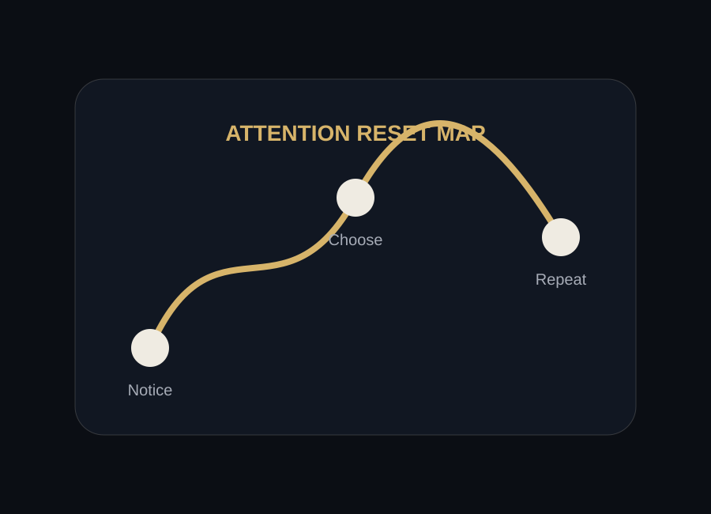

Remove one interruption.
Choose one app and turn off nonessential notifications.
The goal is not to throw away the phone. The goal is to make the phone return to its proper role: a tool that serves your life, not an environment that quietly organizes it.

Choose one app and turn off nonessential notifications.
Try the bed, dinner table, bathroom, desk, or first 20 minutes after waking.
Use app limits, grayscale, scheduled downtime, or a physical place to put the phone.
When the urge to check appears, pause for ten seconds and name the cue.
The museum uses a small commitment because big changes often fail when they are too vague. Choose one realistic action you can repeat.
The answer to that question becomes a life pattern. This museum ends where the habit begins: in the next small moment when the phone asks and you decide.